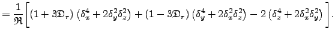
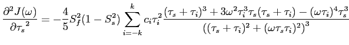
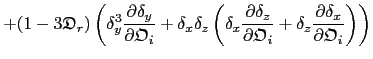
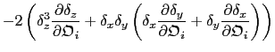
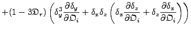

Next: The weight Hessians of Up: Ellipsoidal diffusion tensor Previous: The weights of the Contents Index
The partial derivatives with respect to the orientational parameter
 are
are
|  |
where
|  | ||
|  | ||
|  |  | (theparentequation.121) |
The partial derivatives with respect to the  geometric parameter are
geometric parameter are
 |
The partial derivatives with respect to the
 geometric parameter are
geometric parameter are
The partial derivatives with respect to the
 geometric parameter are
geometric parameter are
where
| (theparentequation.125) |